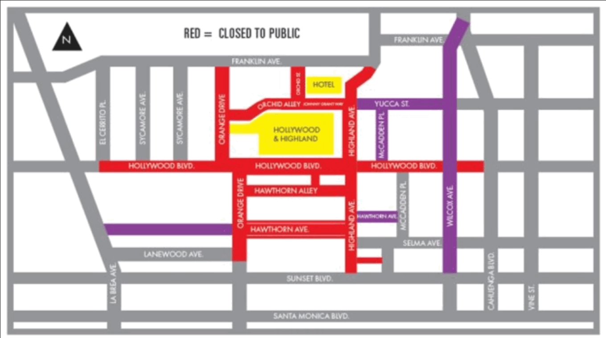
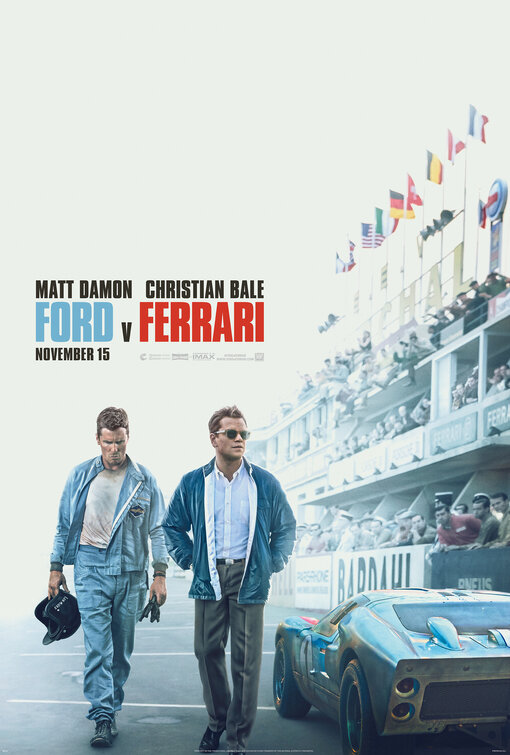
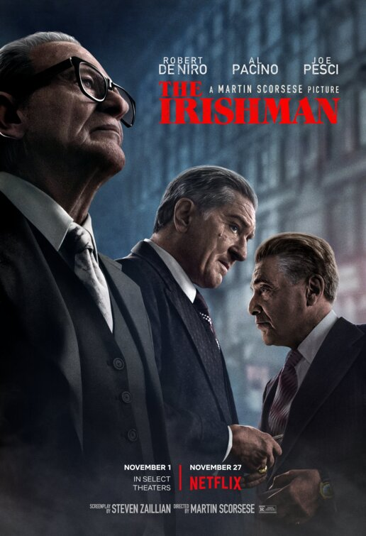
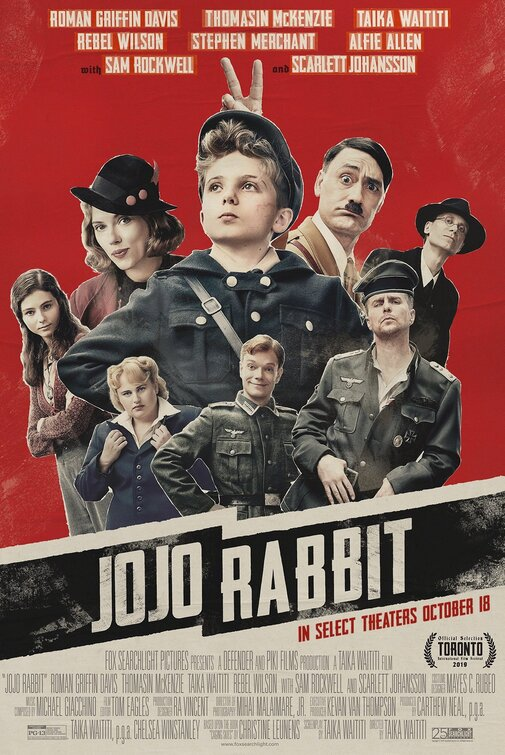
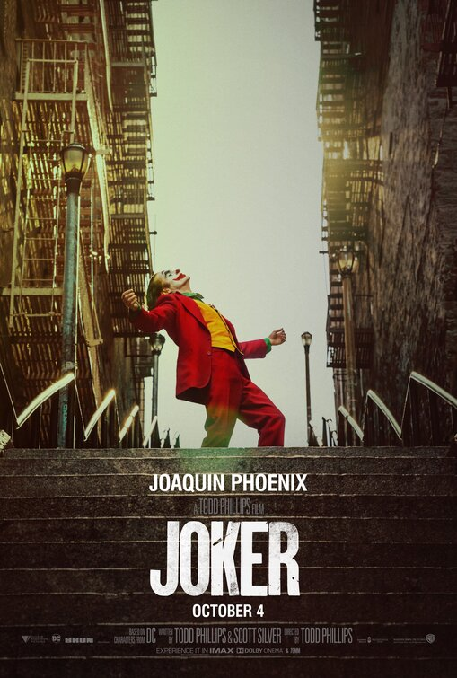
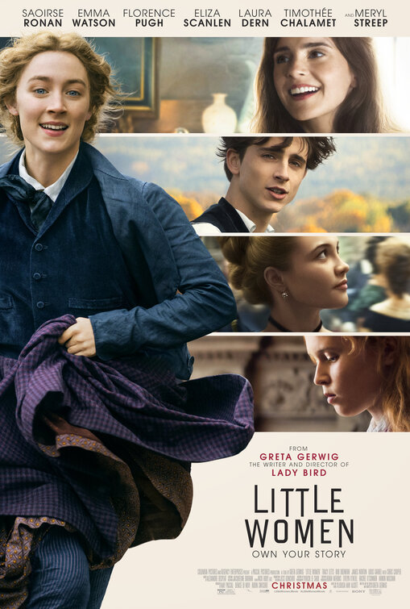
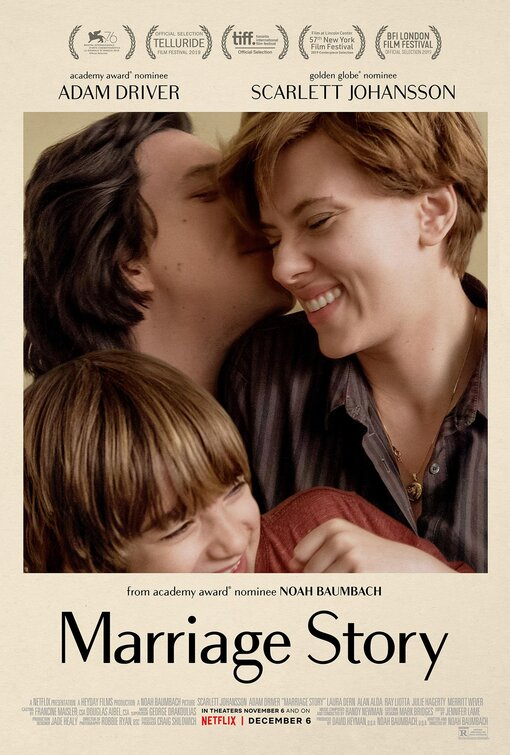
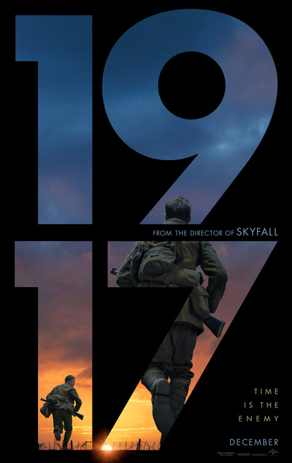
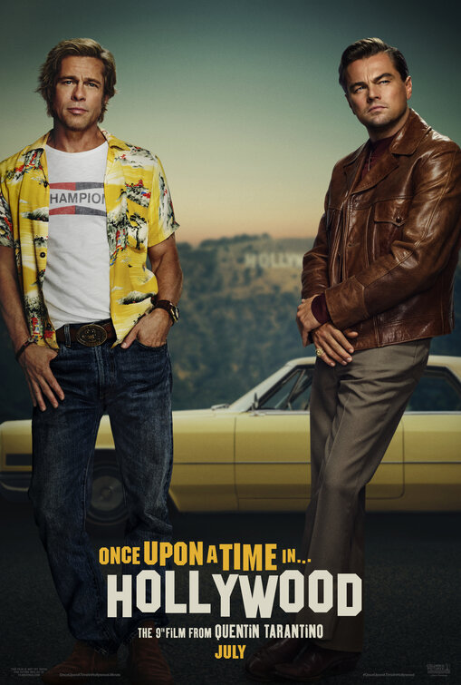
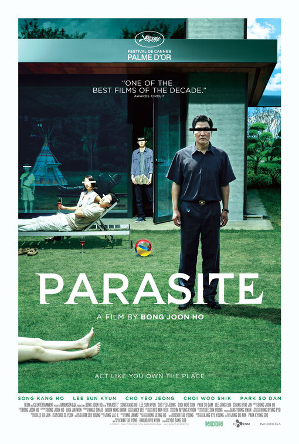

I live in Hollywood, California. For locals, the Academy Awards are either a) work, if you’re in the movie industry, or b) a week-long traffic nightmare, if you’re anyone else.

Among my friends in the entertainment industry, the guild awards (e.g., DGA, WGA, SAG) are generally well regarded, the Golden Globes not even a little, and the Academy Awards—well, it’s sort of like the boorish grandparent who comes to visit once a year but gives out $100 bills to you and your siblings. You grin & bear it.
The Academy has no way of knowing whether its voters actually watch the films that are nominated, or just pick a favorite based on some arbitrary criterion. Consistent with that principle, I feel totally justified picking a best-picture winner based on the typography of the posters.
Note for new visitors: This article is part of a bigger online book called Practical Typography written by me, type designer Matthew Butterick. If you like nerdy typography material, there’s plenty more—see the table of contents.

Movie: Entertaining, though conventional & formulaic.
Typography: The narrow sans serif appears to be Tungsten, which aptly evokes the mid-’60s. But the positioning of the actor names relative to the title is a little sloppy and constricted.

Movie: A long slog. The de-aging effect was not persuasive.
Typography: The font is Grouch, which reflects the

Movie: Well made, if we overlook some jarring shifts in tone.
Typography: I don’t recognize the font (it may be custom lettering) but it seems to be evoking a hand-printed, propaganda-poster feel, which feels apt. The poster spares us another swastika, though not the colors of the Nazi flag. The jagged black background behind the title lettering seems to reference the SS logo. I like that the typography at the top of the poster is given a similar hand-printed look.

Movie: Didn’t see it.
Typography: Like Jojo Rabbit, also emulates the look of old-fashioned letterpress printing. I liked finding out that it was made with real wood type, not digital manipulation. The surrounding sans serif is boring and incongruous. Why not continue with the wood type?

Movie: Didn’t see it.
Typography: I really liked the blackletter nameplate for Greta Gerwig’s previous movie, Lady Bird. Here, the title lettering is adapted from the cover of the 1868 first edition of Little Women. I prefer the 1868 version, however—the contemporized version treads a little close to the overdone trend of chopping pieces off letterforms. The sans serif used elsewhere appears to be Avant Garde, and looks terrible because it has no relation to the main type.
(HT to Stephen Coles for pointing me to the first edition.)

Movie: Didn’t see it.
Typography: Speaking of chopping pieces from letters. The font seems to be Bodoni Sans. To me, this looks like a perfectly nice serif font that’s been amputated. But somehow, maybe that’s an apt choice for film about a divorce.

Movie: Fantastic. Flawless.
Typography: The font is Futura, which was released in 1927 and is thus anachronistic for a film set 10 years prior. But hear me out: the movie prides itself on its fastidious period authenticity. There were plenty of sans serifs in 1917. They just didn’t look like that. (For instance, my Hermes Maia font evokes a style that would’ve been common then.) Still, I think the main reason Futura is used here is that the poster refers to the earlier Sam Mendes movie Skyfall, and Skyfall used a Futura-like face (namely Neutraface).

Movie: Hated it. A rancid reactionary fantasia of pre-baby-boomer American masculinity.
Typography: If you’re going with the most obvious possible typographic idea, you at least have to do it well. I live near the Hollywood sign. Everything about this version is inaccurate. Why? Because the designer merely downloaded a close-enough freeware font and didn’t even change its wretched spacing (see sample at left, created by me in two seconds).

Movie: Started well, but became diffuse after the midway point.
Typography: The sans serif around the title is Gotham, and the title itself seems to be Gotham with some serifs glued on, in a manner reminiscent of experimental 1990s fonts like Dead History. Could it be that the serifs are meant to seem like
1917, though if I’m voting purely on typography, Jojo Rabbit, because it was a concept appropriate for the film, executed well & consistently.
7 February 2020